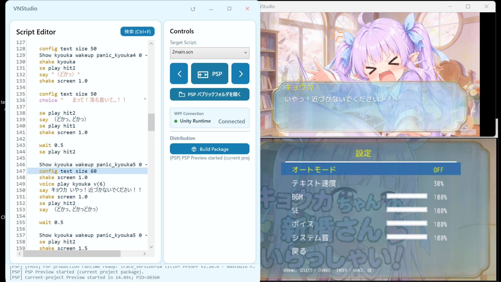
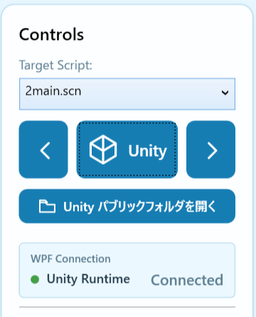

はじめに
PSP（プレイステーション・ポータブル）は、ソニーが2004年に日本で発売した携帯型ゲーム機だ。横長の画面と操作ボタンが一体になっており、両手で持って、テレビにつながずにゲームを楽しめる。ゲームに加えて音楽や動画も再生でき、好きな作品を持ち歩ける機械でもあった。
前回は、X68000プレビューの構築と、XZ80の容量制約を越える仮想外部ディスク「XDSK」について報告した。今回は、その制作環境に新しく加わったPSPランタイムと、Unity・XZ80・PSP・X68000を扱うエディタの構成見直しについて書こうと思う。
ここでいう「ランタイム」は、作った物語の文章・画像・音声を読み取り、ゲームとして動かすプログラムのことであり、今回のPSP対応は、VN Studioで制作した作品を、この携帯ゲーム機でも遊べるようにする取り組みである。
PCで書いている物語を、手の中のPSPで読み進める。
背景が動き、キャラクターが話し、ボタンで選択肢を選ぶ。好きなところでセーブして、また続きを開く。
その一連の体験を、自分の制作している作品で確かめられるようになってきた。
届けられる場所が増えると、作りたいものの想像も広がる。一方で、機種が増えるたびに作業手順まで増えていくと、物語を書く時間が準備に埋もれてしまう。PSPへの対応は、VN Studio全体の作り方を見直す機会にもなった。
第1章：PSPのためのランタイムを作る
PSP向けには、Cで新しいランタイムを作った。エディタで書いたスクリプトをPSP向けの命令列へ変換し、画像や音声とともにパッケージ化する。その内容を、PSP側のランタイムが読み取って実行する構成である。
開発中の確認にはPPSSPPを使う。エディタから素材の変換、パッケージの検証、プレビューの起動までをつなぎ、普段使っているPPSSPPの設定やセーブとは分けて扱うようにした。

最初は、背景を出す、立ち絵を出す、台詞を表示する、入力を待つ、という基本の流れから始めた。そこから選択肢、音声、演出、ゲーム内メニュー、設定、セーブ・ロードへと進めている。
タイトルの動画背景にも対応した。元の動画をPSP向けの形式へ変換し、480×272の画面で再生する。その上にタイトル画像を重ねて動かすところまで、既存の演出を持っていけるようになった。
9月5日の作業では、実機向けの更新用フォルダ生成、タイトル動画、○で決定・×でキャンセルする操作などを、PSP実機でも確認している。
第2章：同じ台詞を、同じ間合いで届ける
移植を進めていると、命令が実行できるだけでは、同じ場面にならないことがある。
分かりやすかったのが、画面を揺らす shake だった。
Unity版では、揺れを始めると、そのまま次の命令へ進む。揺れている最中に声が鳴り、台詞が出る。ところがPSP版の当初の実装では、揺れが終わるまでスクリプトを待たせていた。結果として、同じスクリプトなのに、揺れ終わってから人物が話し始めてしまう。
そこでPSP版も、揺れをスクリプトの進行とは独立して更新するように直した。声や台詞、移動と重なって演出が進むようになり、場面の間合いがUnity版に揃った。
ノベルゲームでは、こうした少しの時間差が、驚きや会話の勢いを変えてしまう。機種ごとの実装を確かめるときも、その場面をどう感じてほしいかまで見ていきたい。
メニューにも同じ考え方を通している。作品のスクリプトで指定した背景画像、フォント、大きさ、色をPSP側でも引き継ぎ、設定やセーブ画面にも使う。物語を読んでいる途中で開く画面にも、その作品らしい見た目が続くようにした。
セーブ・ロードは100スロットに対応し、保存した場面のサムネイルを見ながら選べる。本文の表示速度や、BGM・効果音・ボイス・操作音の音量も調整できる。読み進めることと同じくらい、中断することや、自分に合った読み方に変えることも大切にしたい。
第3章：小さな画面に合わせて、絵と文字を整える
PSPの480×272の画面へ素材を持っていくと、PCで見ていた絵を単純に縮めるだけでは、細部がちらついたり、透明な輪郭の周りに黒白の縁が出たりする。
画像変換にはXZ80向けの縮小処理で得た経験を活用して、特殊な変換アルゴリズムで輪郭を強く縮める場合の処理と、透明部分の扱いを見直した。背景と立ち絵、UIを実際に並べて比較し、背景には明るさの扱いを変えた縮小を採用した。
文字についても、画面の視認性に配慮しながら、本文の大きさ、話者名の位置、行間、ウィンドウの余白を調整した。文字が大きくなったことにより、一度に表示できる文字が限られるため、次の行が必要になるときは、それまでの行を滑らかにスクロールさせるようにした。書体の切り替えや選択肢の表示、決定時の動きも、実際に読み進めながら整えている。
小さな画面には、その大きさに合った読みやすさがある。限られた画面の中でも、絵や言葉を落ち着いて受け取れるようにしたい。
第4章：四つのランタイムを、一つの操作の流れへ
PSPが加わったことで、エディタから扱うランタイムは四つになった。
これに合わせて、起動操作を整理し、UIを統合した。左右のボタンで Unity → XZ80 → PSP → X68000 と切り替え、中央に表示された機種のアイコンと名前を押すと、そのランタイムが起動する。独立していたRun／Stopや、X68000専用のExport／Settingsボタンは廃止し、実行先を選ぶところからプレビューまでを同じ場所へまとめた。

内部では、それぞれの機種に必要な処理が動いている。
| 実行先 | エディタから起動するまでの主な経路 |
|---|---|
| Unity(windows) | Unityランタイムを起動し、Named Pipeでスクリプトを送る |
| XZ80 | スクリプト・素材からROMとXDSKを生成し、XZ80プレビューを起動する |
| PSP | PSP向けパッケージを生成・検証し、PPSSPPプレビューを起動する |
| X68000 | 実行用パッケージとプレビュー用HDFを準備し、RetroArch＋PX68kを起動する |
X68000の専用ボタンを外しても、プレビューに必要な設定の読み込みやパッケージ生成は内部に残してある。機種ごとの処理を共通の入口から呼び出す構成だ。
また、起動準備中は操作を一時的に無効にし、処理が終わったら戻すようにした。接続状態の表示も設けているが、現在確認しているのはUnityとの通信であり、ほかのランタイムの接続確認は今後の拡張になる。
対応機種が増えても、作る人の手元では「選んで、確かめる」という流れを保ちたい。道具の内側で引き受ける仕事を、ここでも整理している。
第5章：共通の素材と、機種に合わせた素材
構成の見直しは、ボタンだけではない。素材の置き場所にも手を入れている。
XZ80、X68000、PSPでは、同じ絵でも表示の条件が違う。共通素材を使いつつ、機種に合わせて構図や描き込みを調整した画像を使いたい場合もある。そのため、共通の Resources とは別に、TargetResources の下へ機種別の画像を置けるようにした。
たとえば、同じ名前の背景画像がPSP専用フォルダにあれば、PSPではその画像を優先する。専用画像がなければ、共通素材を使う。XZ80とX68000についても、同じ規則でそれぞれの画像を探す。
機種別フォルダは互いに混ざらず、Unity用のパッケージにも専用画像を含めない。作品全体を機種ごとに複製する手間を抑えながら、違いが必要な画像を選んで用意できる。
スクリプト上の画像名は保ち、表示先に合う画像を道具側で選ぶ。この分担によって、物語の編集と、機種に合わせた見せ方の調整を進めやすくしている。
PSPプレビューでは、変わっていない生成物の再利用も見直した。元の素材、変換方法、生成済みファイルの内容を照合し、必要なものだけを作り直す。背景の変換方法を更新した際の記録では、291件のうち22件を再生成し、269件を再利用できた。同じ入力での次の実行では、291件すべてを再利用している。
台詞を少し直すたびに画像や音声を最初から変換していては、試すことが億劫になる。こうした待ち時間を減らすことも、物語を書く流れを守るための作業である。
第6章：実機へ渡すところまでを整える
エディタ内で確認できた作品を、PSPへ持っていく手順もまとめた。
PSPの起動操作から、検証済みパッケージを使った更新用の VNStudio フォルダを生成する。基本的には、これをPSP実機のメモリスティックにコピーするだけで、PSPで自作ゲームが起動できる。
ただし、保存ファイルが残ることと、更新後もその続きから再開できることは別の問題になる。不慮の動作不良を防ぐため、スクリプトの命令配置が変わった場合には、以前のセーブを読み込めないようにした。
現在、PSPランタイムの実装において、本番スクリプトの2,007命令、296分岐を検証完了し、そのスクリプト内の未対応命令は0となり、移植作業はほぼ完了している。これは今回検証した作品の範囲での結果であり、すべての作品やUnityの全機能について互換性を確認した、という意味ではないが、今回は一気に作業が進んだ。
また、最後に修正した条件分岐は、コンパイラと本番命令列の検証まで完了している。実機での確認済み事項と分けながら、作品を通して読み進める確認を重ねていきたい。
おわりに：思いが届く場所を、少しずつ増やす
PSP対応を進める中で、画面の揺れ方、文字の送り方、メニューの見た目、素材の変換、起動の手順と、いろいろなところへ手を入れた。振り返ると、どれも、作る人と読む人が作品に向き合う時間につながっている。
自分で考えたことを、言葉や絵や音にしてみる。その作品が誰かの手元へ届き、その人が自分のことを考えたり、明日を過ごす小さな支えになったりする。しるふぁ工房の作品や道具を、そのような営みにつなげていきたいと思っている。
物語を作ることと、それを形にする道具を作ること。その両方を続けながら、一人ひとりが自分の思いや感性を大切にして生きていけるようなきっかけを、少しずつ届けていきたい。
PCの前で書いた物語が、手の中のPSPでも読めるようになる。その小さな広がりを、これからの作品づくりへつないでいこうと思う。